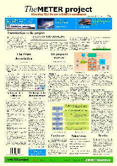
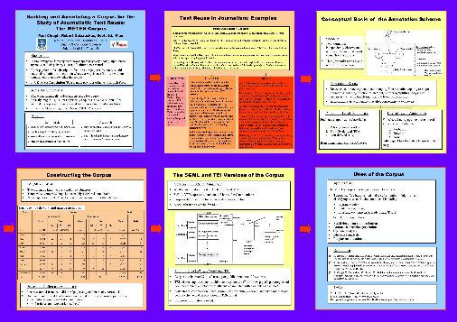

METER Home | METER Proposal | METER Corpus | Algorithms | References | Web Links | NLP Home
METER
documentation
[Conference Papers | Technical
Reports | Posters | Presentations | Misc]
Conference Papers
Robert Gaizauskas, Lou Burnard, Paul Clough and Scott Piao (2003), Using the XARA XML-Aware Corpus Query Tool to investigate the METER Corpus. In Proceedings of Corpus Linguistics 2003, Lancaster, UK. (pdf)(ps) Paul Clough, Robert Gaizauskas, Scott Piao and Yorick Wilks (2002), METER: MEasuring TExt Reuse. In proceedings of the 40th Anniversary Meeting for the Association for Computational Linguistics (ACL-02), pp.152-159, 7-12 July, University of Pennsylvania, Philadelphia, USA. (pdf)(ps) Paul Clough, Robert Gaizauskas and S. L. Piao (2002), Building and annotating a corpus for the study of journalistic text reuse. In Proceedings of the 3rd International Conference on Language Resources and Evaluation (LREC-02), pp.1678-1691 (Vol V), 29-31st May 2002, Los Palmas de Gran Canaria, Spain. (pdf)(ps) Robert Gaizauskas, Jonathan Foster, Yorick Wilks, John Arundel, Paul Clough and Scott Piao, (2001), The METER corpus: a corpus for analysing journalistic text reuse, In Proceedings of Corpus Linguistics 2001, Lancaster, UK, pp.214-223. (pdf)(ps) Paul Clough (2001), Measuring text reuse in a journalistic domain, In Proceedings of the 4th Annual CLUK Colloquium, University of Sheffield, Sheffield, UK, pp.53-63. (pdf)(ps) Technical Reports:
Scott S.L. Piao, Paul Clough, Robert Gaizauskas and John Arundel (2002), Meter Corpus Documentation (Version 2), Department of Computer Science, University of Sheffield, UK. (pdf)Piao, S.L. Piao, Paul Clough and Rob Gaizauskas (2001), The TEI annotation of the Meter Corpus, Department of Computer Science, University of Sheffield, UK. (pdf) Piao, Scott S.L. (2001), Detecting and measuring text reuse via aligning texts, Research Memoranda: CS-01-15, Department of Computer Science, University of Sheffield, UK.(pdf) Clough, Paul , Robert Gaizauskas, Scott Piao and Yorick Wilks (2001), METER: MEasuring TExt Reuse, Research Memoranda: CS-01-03, Department of Computer Science, University of Sheffield, UK. (pdf) Clough, Paul, Scott Piao, John Arundel and Robert Gaizauskas (2000), METER Corpus Documentation, METER Corpus CD (Beta 1.0), Department of Computer Science, University of Sheffield, UK. (pdf) Wilks, Yorick (2000), On the ownership of text, In Proceedings of the Conference on Digital Resources in the Humanities (DRH2000), University of Sheffield, UK. (pdf) Clough, Paul (2000), Plagiarism in natural and programming languages: an overview of current tools and technologies, Rsearch Memoranda: CS-00-05, Department of Computer Science, University of Sheffield, UK. (pdf)
  METER project poster (won best student poster award at the DCS research retreat 2001) (ppt)(pdf) METER Corpus poster presented at LREC 2002 (pdf)
Paul Clough (2002), METER: MEasuring TExt Reuse, 40th Anniversary Meeting for the Association for Computational Linguistics (ACL-02) (pdf) Robert Gaizauskas (2001), The METER corpus: a corpus for analysing journalistic text reuse, Corpus Linguistics 2001, Lancaster, UK (ppt) Robert Gaizauskas (2001), The METER corpus: a corpus for analysing journalistic text reuse, Centre for Computational Linguistics, University for Manchester Institute of Science and Technology (UMIST), Nov. 16, 2001 (ppt)(pdf) Scott S.L. Piao (2001), Demo on Tesas and TEI version of the Meter Corpus, University of Lancaster. (ppt) Paul Clough, Measuring Text Reuse and Copy Protection/Detection, Presentation to Reuters (28th March 2001) at British Standards Group (BSG). (ppt) Paul Clough (2001), Measuring Text Reuse in a Journalistic Domain, CLUK4 Student Symposium (2001), University of Sheffield. (ppt) Paul Clough (2000), Measuring Text Reuse, DRH2000 Conference, University of Sheffield (ppt) Paul Clough (2000), Introductory METER talk, University of Sheffield. (ppt)
EPSRC METER project research proposal Paul Clough (2000), Identifying reuse between the Press Association and newspapers of the British Press. (doc)(pdf) Scott S.L. Piao (2001), Proposing basic approaches to detecting text rewrite. (pdf) Sheffield University newsletter abstract (Feb 2000). (doc) (pdf) GCHQ visit (2000). (doc)(pdf)
METER Home | METER Proposal | METER Corpus | Workshop | References | Web Links | NLP Home
Last updated: August 2002